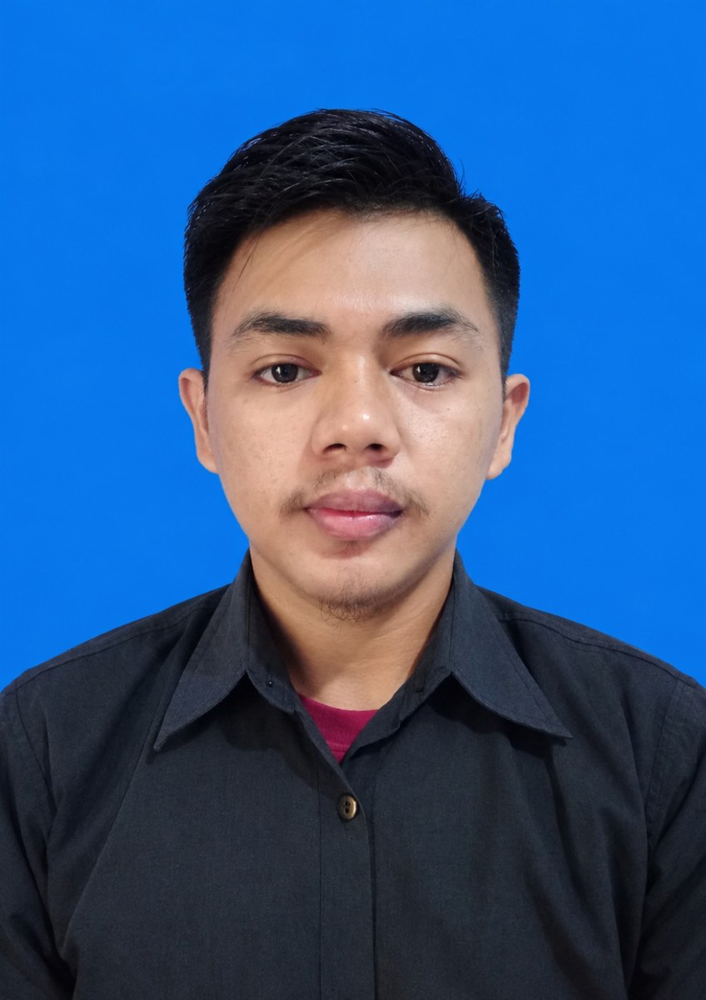

Marip Maulana
Teknisi Fiber Optic & Networking
Berpengalaman lebih dari 5 tahun di bidang instalasi dan jaringan. Terbiasa bekerja di lapangan, melakukan pemeriksaan gangguan, serta mendukung konektivitas yang andal.

Tentang Saya
Saya Marip Maulana, teknisi Fiber Optic dan Networking dengan pengalaman lebih dari 5 tahun. Saya tertarik pada pekerjaan instalasi, pemeliharaan, dan troubleshooting jaringan, serta terus ingin mengembangkan keterampilan teknis.
Pendidikan: SMA/SMK
Area kerja yang diminati: Bandung, Kabupaten Bandung, dan Cimahi
Mobilitas: SIM C dan kendaraan roda dua
Keahlian
Bidang Pekerjaan
Instalasi FO
Pemasangan dan penanganan jaringan fiber optic sesuai kebutuhan lapangan.
Pengujian & Gangguan
Pemeriksaan jalur dan dukungan identifikasi gangguan menggunakan alat ukur yang sesuai.
Networking
Dukungan instalasi, pemeriksaan konektivitas, dan troubleshooting jaringan.
Catatan: deskripsi di atas merangkum bidang keahlian. Tambahkan proyek nyata, foto pekerjaan, atau sertifikat hanya jika tersedia dan sesuai pengalaman.
Kontak
Terbuka untuk kesempatan kerja di bidang Fiber Optic dan Networking.
Email: marivmaulana50@gmail.com
WhatsApp: 082321661698